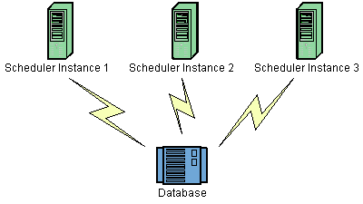

Clustering with JDBC-JobStore
Clustering brings both high availability and scalability to your scheduler via fail-over and load balancing functionality.

Clustering currently only works with the JDBC-Jobstore (JobStoreTX or JobStoreCMT), and essentially works by having each node of the cluster share the same database.
Load-balancing occurs automatically, with each node of the cluster firing jobs as quickly as it can. When a trigger's firing time occurs, the first node to aquire it (by placing a lock on it) is the node that will fire it.
Fail-over occurs when one of the nodes fails while in the midst of executing one or more jobs. When a node fails, the other nodes detect the condition and identify the jobs in the database that were in progress within the failed node. Any jobs marked for recovery (with the "requests recovery" property on the JobDetail) will be re-executed by the remaining nodes. Jobs not marked for recovery will simply be freed up for execution at the next time a related trigger fires.
Enable clustering by setting the "org.quartz.jobStore.isClustered" property to "true". Each instance in the cluster should use the same copy of the quartz.properties file. Exceptions of this would be to use properties files that are identical, with the following allowable exceptions: Different thread pool size, and different value for the "org.quartz.scheduler.instanceId" property. Each node in the cluster MUST have a unique instanceId, which is easily done (without needing different properties files) by placing "AUTO" as the value of this property. See the info about the configuration properties of JDBC-JobStore for more information.
|
Never run clustering on separate machines, unless their clocks are synchronized using some form of time-sync service (daemon) that runs very regularly (the clocks must be within a second of each other). See http://www.boulder.nist.gov/timefreq/service/its.htm if you are unfamiliar with how to do this. |
|
Never fire-up a non-clustered instance against the same set of tables that any other instance is running against. You may get serious data corruption, and will definitely experience eratic behavior. |
#============================================================================ # Configure Main Scheduler Properties #============================================================================ org.quartz.scheduler.instanceName = MyClusteredScheduler org.quartz.scheduler.instanceId = AUTO #============================================================================ # Configure ThreadPool #============================================================================ org.quartz.threadPool.class = org.quartz.simpl.SimpleThreadPool org.quartz.threadPool.threadCount = 25 org.quartz.threadPool.threadPriority = 5 #============================================================================ # Configure JobStore #============================================================================ org.quartz.jobStore.misfireThreshold = 60000 org.quartz.jobStore.class = org.quartz.impl.jdbcjobstore.JobStoreTX org.quartz.jobStore.driverDelegateClass = org.quartz.impl.jdbcjobstore.oracle.OracleDelegate org.quartz.jobStore.useProperties = false org.quartz.jobStore.dataSource = myDS org.quartz.jobStore.tablePrefix = QRTZ_ org.quartz.jobStore.isClustered = true org.quartz.jobStore.clusterCheckinInterval = 20000 #============================================================================ # Configure Datasources #============================================================================ org.quartz.dataSource.myDS.driver = oracle.jdbc.driver.OracleDriver org.quartz.dataSource.myDS.URL = jdbc:oracle:thin:@polarbear:1521:dev org.quartz.dataSource.myDS.user = quartz org.quartz.dataSource.myDS.password = quartz org.quartz.dataSource.myDS.maxConnections = 5 org.quartz.dataSource.myDS.validationQuery=select 0 from dual